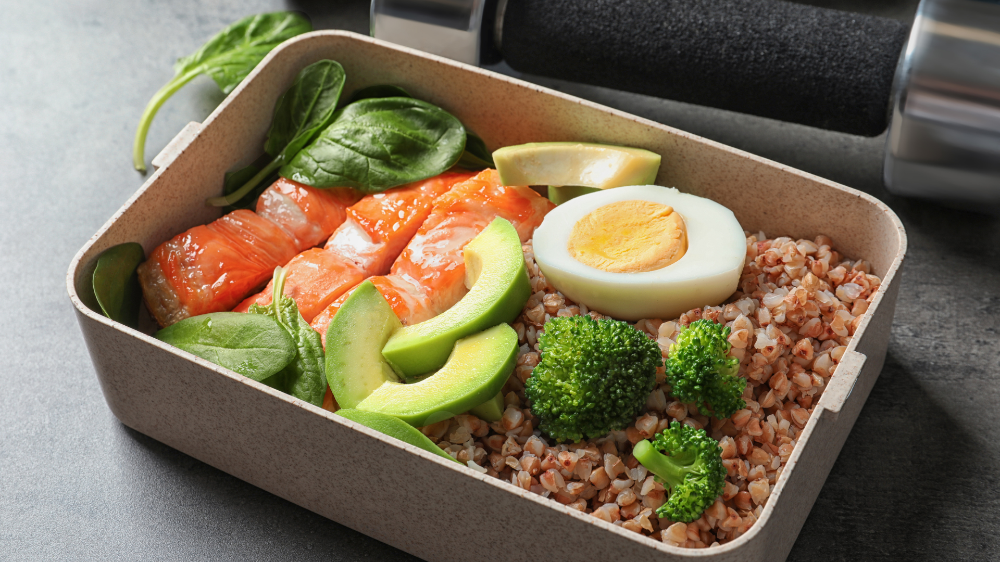
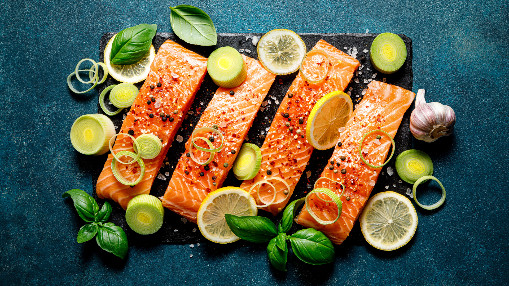
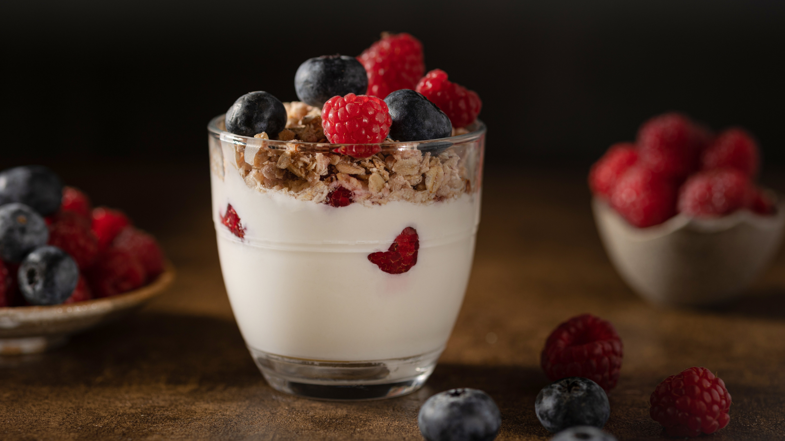

I used to feel sluggish every afternoon and relied on coffee to get through the day. No matter how much sleep I got, I always hit a wall by 2 PM. I tried supplements, energy drinks, even napping — nothing worked long-term.
Then I made three simple changes to what I eat — and my energy, focus, and overall health completely shifted. These aren’t fad diet foods or expensive superfoods. They’re everyday ingredients that made a real difference. Here are my top 3 food recommendations.
1. Wild-Caught Salmon — The Energy Powerhouse
Salmon became a staple in my weekly meals, and the impact was immediate. It’s packed with omega-3 fatty acids, high-quality protein, and vitamin D — all of which support sustained energy and brain function.
- Rich in Omega-3s – Supports heart health, reduces inflammation, and boosts brain function
- High-Quality Protein – Keeps you full longer and supports muscle recovery
- Vitamin D Boost — Helps regulate mood and energy levels, especially during winter months
- Versatile & Easy to Cook — Bake it, grill it, or toss it in a salad — it works with everything

2. Sweet Potatoes — The Steady Fuel
I swapped white rice and bread for sweet potatoes, and the afternoon crashes stopped. Sweet potatoes are a complex carbohydrate, meaning they release energy slowly and keep blood sugar stable.
- Slow-Release Energy – Complex carbs keep you fueled without the spike and crash
- Loaded with Fiber – Supports digestion and keeps you feeling satisfied
- Packed with Vitamins – High in vitamin A, vitamin C, and potassium
3. Greek Yogurt with Berries — The Morning Game-Changer
I replaced my sugary cereal with Greek yogurt topped with mixed berries, and my mornings completely transformed. The combination of protein, probiotics, and antioxidants gives me a clean start to the day without any heaviness.
Greek yogurt is high in protein and probiotics that support gut health, while berries add natural sweetness along with fiber and antioxidants. Together, they’re the perfect balanced breakfast.
The Bottom Line
You don’t need a complicated diet plan to feel better. Sometimes it’s just about making a few smart swaps with real, whole foods.
These three foods — salmon, sweet potatoes, and Greek yogurt with berries — are simple, affordable, and made a noticeable difference in my daily energy and health.
Eat well, feel the difference. Small changes in your plate lead to big changes in your day.

Start Eating Better Today
Try adding these three foods to your weekly routine and see how you feel after just two weeks.